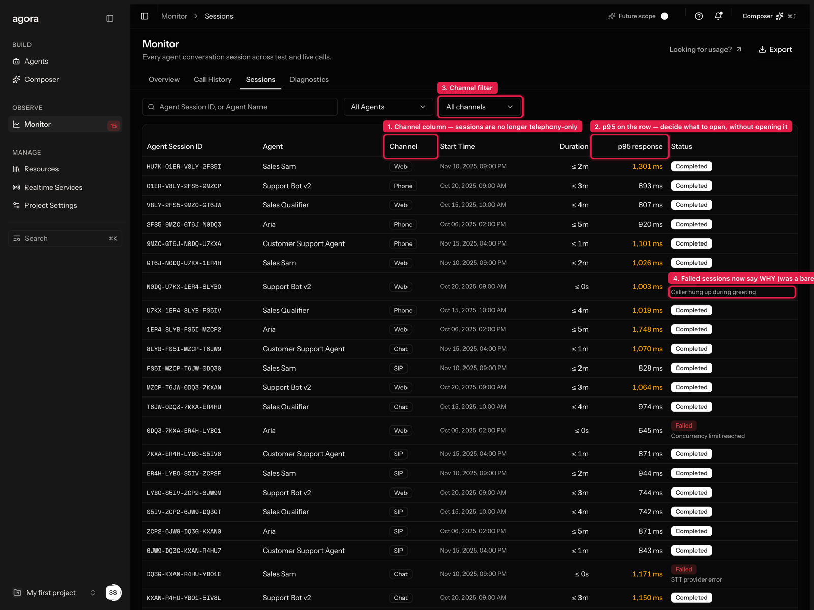
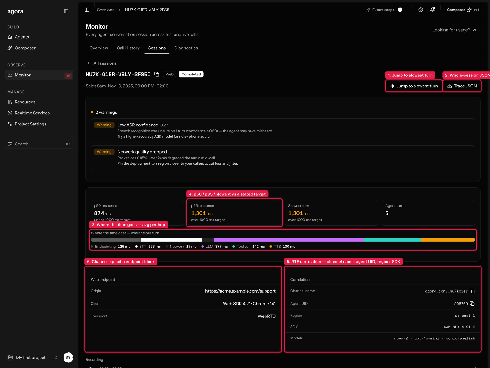
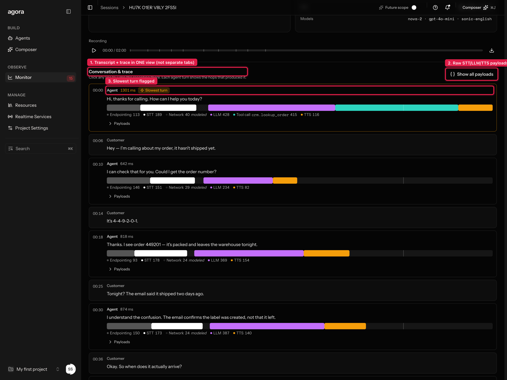
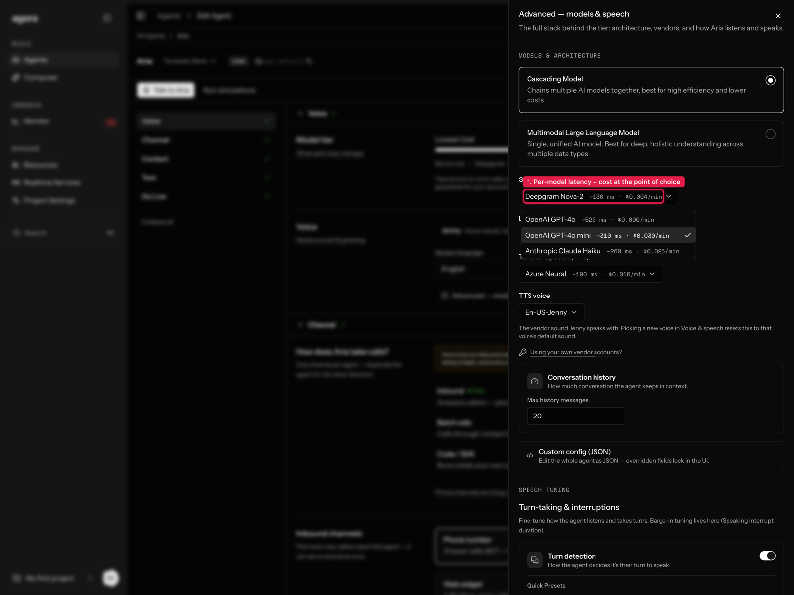
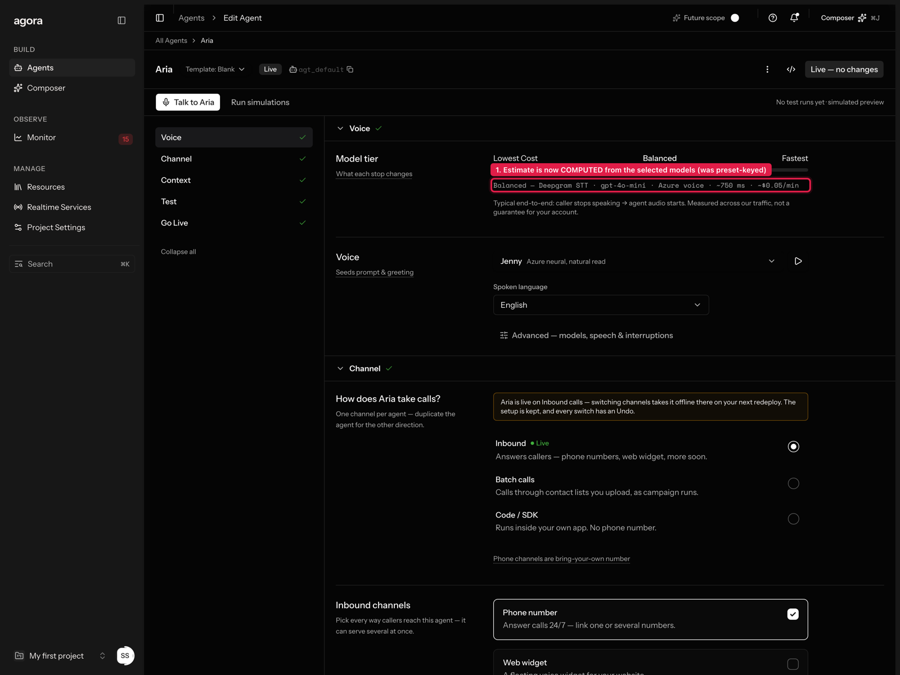
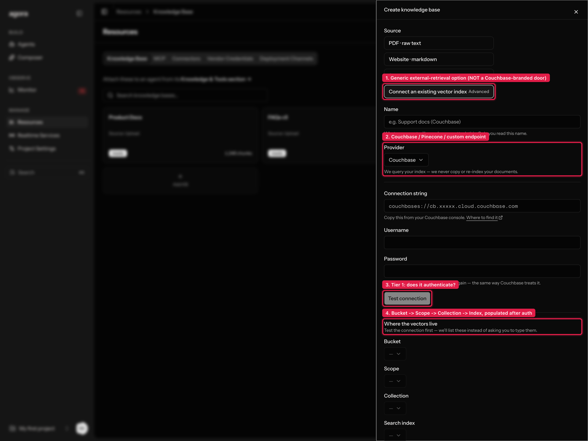
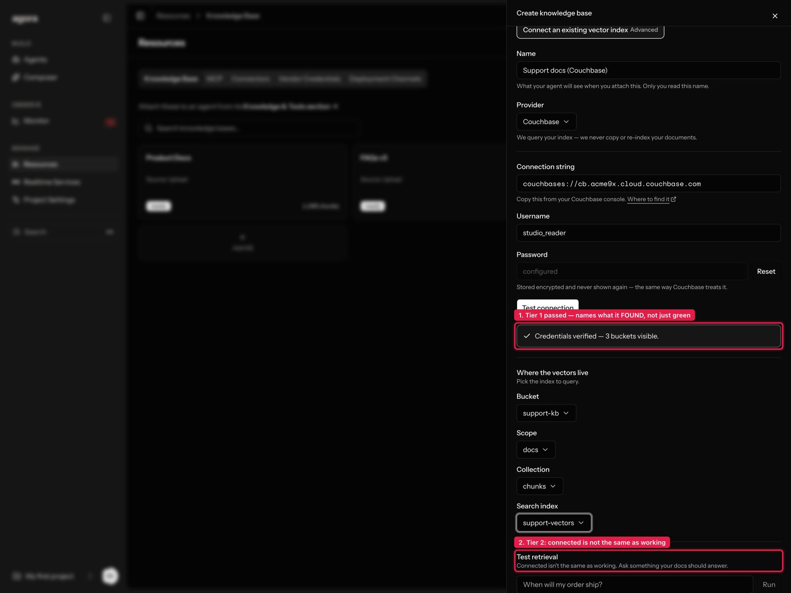

Four research streams ran first — three competitor scans (templates & model selection, call observability, RAG connectors) and a three-persona internal focus group. They agreed on something I hadn't scoped: three of the four Wave-1 features were sitting on top of S1 defects, where the console was showing users things that weren't true. Those got fixed before anything new was built.
Each of these was the console asserting something false. They're listed first because they were the highest-value work in the wave, and none of them was on the original plan.
| What was wrong | Why it mattered | Fix |
|---|---|---|
| Sessions rows looked clickable and went nowhere. Sessions had no detail view at all, while the visually identical Call History rows opened one. | All three personas read it as a broken table, not a missing feature. One tried clicking three times. | New /sessions/[id] — see §2 |
| The model estimate never moved. Latency and cost were keyed to the preset, so overriding the LLM left "~800 ms · ~$0.10/min" unchanged while the label relabelled itself "Custom mix". | The UI announced that the stack had changed, then showed a number that hadn't. The tester who caught it stopped believing every other number on the page. | Estimates computed per-model — §4 |
| Call History invented phone numbers. It looped every deployment and stamped a From/To on each row, so a web-widget deployment appeared as a phone call with a fabricated number. | Not ambiguity — fabricated data on an observability surface. | Filtered to telephony; web/chat/SIP runs live in Sessions with an honest channel label |
This is the biggest piece of the wave. It merges three roadmap items into one page, and it's channel-agnostic by design: a web or chat run is a first-class session, not a phone call with empty fields.



Tool call crm.lookup_order 415 is visible on the slow turn: tool time was previously excluded from end-to-end entirely, even though diagnostics already modelled tool calls up to 5.5 s. Trace and diagnosis now describe the same call. Network 40 modeled is hatched, because a trace that silently mixes measured and modelled values is worse than no trace.


~750 ms = 130 (Nova-2) + 310 (GPT-4o mini) + 190 (Azure) + 120 overhead. Change any slot and it moves. Underneath, the measurement boundary is stated in one sentence — "caller stops speaking → agent audio starts, measured across our traffic, not a guarantee for your account." A latency number with no stated boundary is unfalsifiable, and every vendor quotes the flattering one.
Templates used to write four generic lines ("You are X, a voice agent. Be concise and helpful.") and nothing else — no stack, no extraction fields — while each entry declared an LLM vendor that the apply function silently ignored. A tester called the metadata "decorative"; another said he could have typed the prompt faster himself.
Each of the five templates now carries a worked multi-paragraph prompt with real edge-case handling (what the payment-reminder agent does when someone else answers; the difference between a shipping label being created and a parcel actually shipping), its own greeting and failure line, a speed/cost preset that suits the job, and the fields the run should extract. Applying one shows a diff of exactly what changes.
The roadmap item says "integrate Couchbase as a RAG provider". Both the connector research and the focus group independently argued against building that literally: no persona asked for Couchbase by name (they asked not to re-upload 40k docs into a black box), a fourth vendor-named connect-an-external-thing door would deepen the existing Knowledge/MCP/Connectors IA tension, and Couchbase was one of five systems users named. So it's a generic external-retrieval flow with Couchbase as the first provider.


configured with a Reset, mirroring how Couchbase, Pinecone, Qdrant and Weaviate all behave: none of them can show you a secret twice.
couchbases://cb.demo.cloud.couchbase.com, any username, a password of 8+ characters, then Test connection.
Worth trying the failure paths too: an endpoint not starting couchbase returns the IP-allowlist error with a copyable egress IP (the failure nobody anticipates — credentials perfect, connection still times out); a password under 8 characters returns an auth error instead. Every distinguishable failure has a different fix, so "Connection failed" would have been useless.
Then pick the four levels and run a test retrieval.
The competitor scan recommended promoting templates from the header dropdown into a card gallery. The focus group disagreed, and I followed the focus group: one persona found six tiles "the same nothing, just bigger", another didn't want templates at all, and the third wanted a comparison rather than a browse surface. The owner had also deleted the static template grid eleven days earlier in favour of the describe-box. The problem was never the door — it was the payload. So the budget went into the template contents and an apply-diff instead.
One persona wanted complete raw payloads; another said flatly he wouldn't cross-reference a separate tab back to turn 14. These aren't in conflict — they're two access paths to one dataset, so both shipped: inline collapsed disclosure per turn, plus a whole-session JSON download.
Wave 1 is complete. Carried into Wave 2, from research rather than the original roadmap:
/sessions/{id}?turn=7) so a session is pasteable into a bug report.